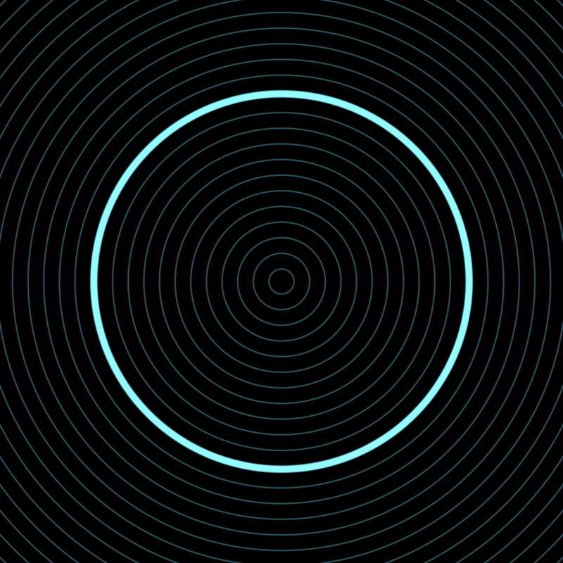
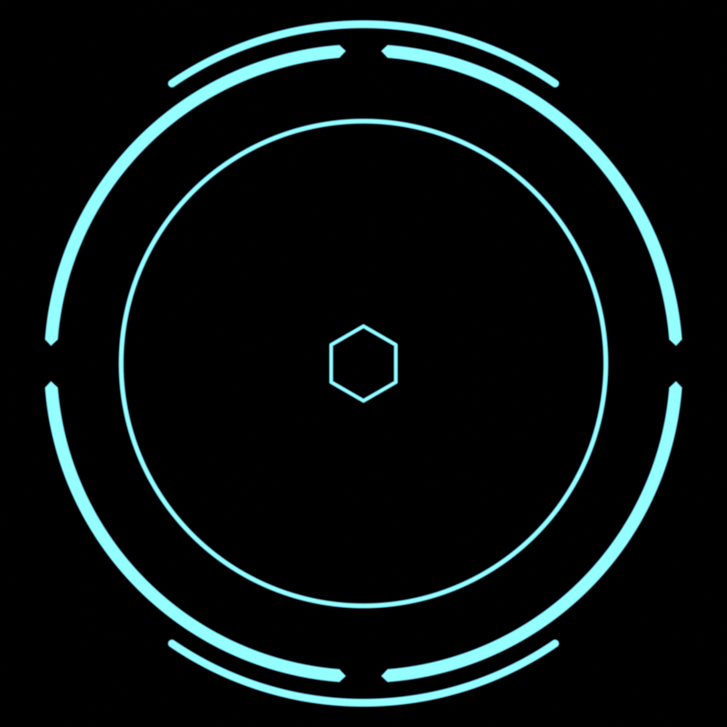
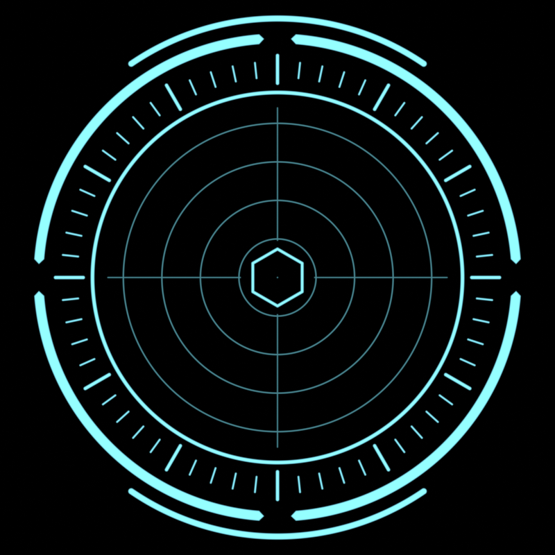
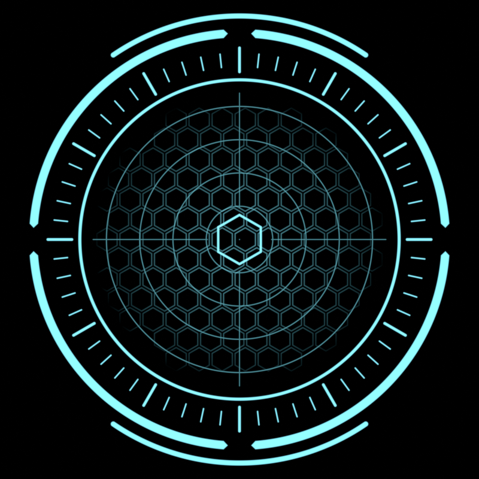
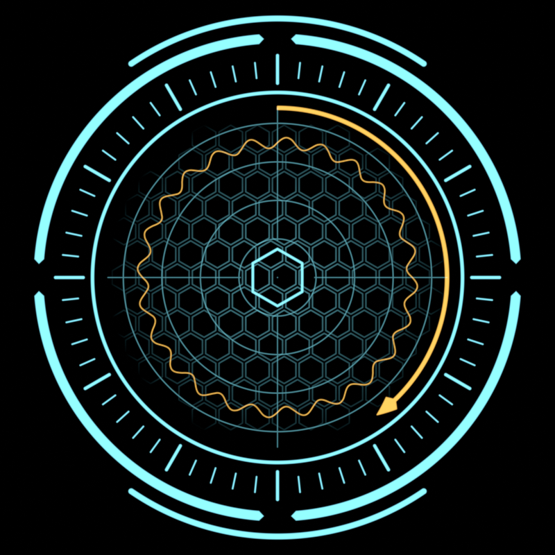
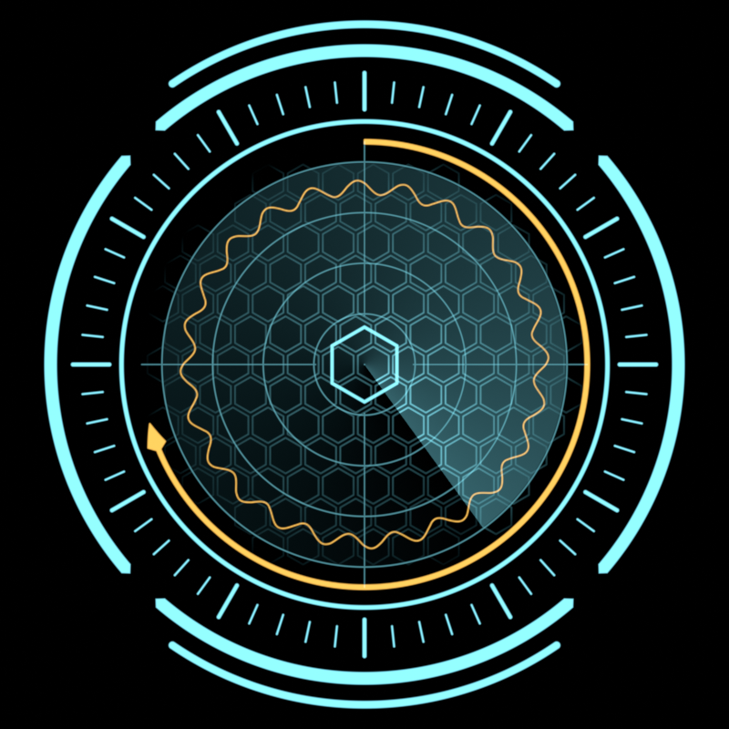
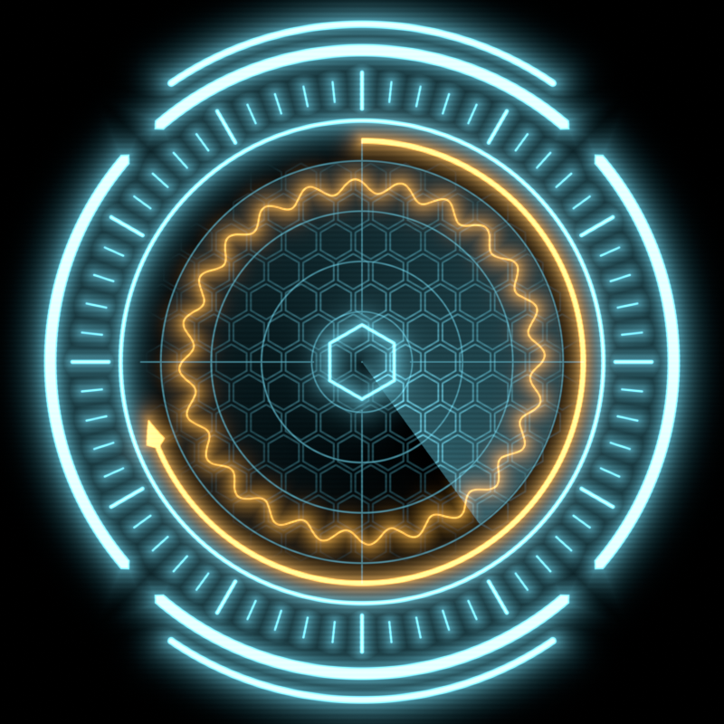

Sci-fi HUD
A radar dial on a flat screen: a cut bezel that ticks round, a scale, a grid of cells lit by a sweep, a gauge and an oscilloscope trace, all glowing.
Every line of it is a distance, drawn by one material. The tutorial uses the language and four free modules of the standard library, nothing else: sdf2d, patterns2d, curves2d and math.

Before you start
You need Blender 5 and the Base Node add-on: its standard library holds the four modules, free. A use line at the top of each file brings the graphs it calls.
Every block below is a complete .bn file, its code beside the nodes it builds. Two ways to try a step:
- Drag it. Drag the file icon of its block, or its title, onto empty space in Blender's 3D Viewport, and keep Instantiate the Example: a new object carries
sci_fi_hudat the 3D cursor, with its materialHud. A click on the file icon downloads the file instead. - Paste it. Press the copy button of its block, open a Geometry Node editor, press Ctrl+Shift+V and pick Add as Modifier, on any mesh object: the graph makes its own screen.
The screen lies flat, facing up: look at it from the top view (Numpad 7), in Rendered or Material Preview shading. The pictures are rendered from these exact files by render.py: EEVEE, an orthographic camera straight above that frames the 3.6 m screen in 800 × 800 pixels, a black world, and the view transform Standard, which keeps the colours the material gives. Blender's default, AgX, would wash the cyan out to a pale blue.
Lines from distances
A HUD is lines: thin, sharp, at any size. Drawing them as meshes means modelling every tick and every gap. Here, every shape is a signed distance: a number at each point of the screen, how far that point is from the shape's contour, negative inside, positive outside. A distance gives a line where it is near zero, a halo where it is small, and two shapes combine with a min or a max.
The distances come from two places:
- Computed in the material, at every pixel. The graphs of
sdf2dandmathare made of math nodes only, and a module's graph can be called from a shader graph: it is built again for the shader tree, assdf ring 2d (Shader). Steps 1 to 3. - Measured from geometry, at every vertex of the screen.
patterns2dandcurves2dmake meshes and curves, which no material can build.GeometryProximitymeasures how far each vertex lies from them, and the material reads the result. Steps 4 and 5.
One small graph turns either kind into light.
1. A ring is a distance
The screen is a Grid of 3.6 m, a single square: in this step the material does all the work. TextureCoordinate().object gives each point of it its position, in metres, the centre of the screen at 0.
step1_ring.bn: Hud, ink, sci_fi_hud
- The circle.
sdf_circle, frommath, is the distance to a circle of radius 1.2: the distance to the centre, minus the radius. Negative inside the disc, zero on the circle, positive outside. - The ring.
sdf_ring_2d, fromsdf2d, takes a distance and gives the distance to a band ofthicknesscentred on its contour:abs(distance) − thickness / 2. Negative within 2 cm of the circle, on both sides. - The ink.
inkturns a distance into light: 1 inside, 0 outside, and a ramp across the contour, 6 mm wide. A pixel here is 4.5 mm: the ramp smooths the edge over about one pixel, and the line has no stairs.
A distance is defined everywhere, not only on the shape. sdf_isolines draws its contour lines, every 10 cm, faint: circles inside and outside the ring, all centred on it. Every later step relies on this: a distance far from the shape is still meaningful, to cut, to join or to glow.
The module graphs take their point p as an input, with Position() as its default: in Geometry Nodes, an unconnected p reads the position of each point. A shader tree has no such default, so the call passes p, the texture coordinate.

2. Cut and join
The dial gets its pieces. Each one is a distance; the booleans that combine them are one node each.
step2_cuts.bn: dial, Hud
- Union,
min(a, b): a point takes the distance to the nearest piece, so it is inside if it is inside either.dialjoins its five pieces this way. - Subtraction,
max(a, −b): insideaand outsideb. The bezel, a ring of radius 1.55, loses the arms of a cross and keeps four arcs. The arms ofsdf_cross_2dare 18 cm wide: itsthickness, 0.09, is half the width of an arm, and itslengthhalf the span.sdf_chamfer_subtractiondoes the same with a bevel of 3 cm where the cut meets the ring: look at the ends of the four arcs, cut at an angle. - A mirror is a change of point.
sdf_arc_2ddraws an arc centred on the top,apertureradians (0.6, about 34°) each side. Read at(x, −y), the same arc appears at the bottom: changing the point you ask about moves the shape, and costs no new shape. - The reticle is the outline of a hexagon, its distance passed through
sdf_ring_2das the circle's was.sdf_hexagon_2dhas a flat top; swapping x and y stands it on a corner.

3. Ticks and range rings
Sixty ticks round the dial would be sixty segments, sixty distances and sixty min. Instead, the point is folded.
step3_ticks.bn: dial
- Polar repetition.
sdf_polar_repeat_2dcuts the plane intosectorsslices round the centre and brings every point into the one around the +X axis, turning it back by a whole number of slices. One segment drawn there, from 1.3 to 1.4 m, shows in every slice: 60 ticks for the price of one. - Major ticks. The same with 12 sectors, a longer and thicker segment, from 1.26 to 1.44 m: every fifth tick of the 60 is now a major one.
- Range rings. The distance to the centre is
r; its contour lines every 25 cm, fromsdf_isolines, are circles.maxwithr − 1.1is an intersection: the rings stop at 1.1 m. - The crosshair: two
sdf_segment_2d, kept outside 24 cm with another intersection,max(hair, 0.24 − r), so they leave the reticle clear.
The scale comes out of dial as a second distance, faint: the material draws it at 35 % of the bright pieces.

4. A grid of cells, measured
patterns2d makes tilings as geometry: hexagonal_grid_2d gives a mesh of hexagons. A material cannot call it: a shader tree has no mesh. So the geometry measures it, and hands the measure to the material.
step4_cells.bn: cells, sci_fi_hud, Hud
- The cells. 13 columns and 15 rows of hexagons 10 cm in radius, each shrunk by 12 %, its
margin: two cells side by side show two outlines with a gap between. Of them,DeleteGeometrykeeps those whose centre lies within 1.05 m. The test is a distance again,sdf_circleofmath, called in Geometry Nodes this time, where itspis the position of each face. - A screen of vertices. The
Gridnow hasresolutionsquares a side, 720 by default: 721 × 721 vertices, 5 mm apart. - The measure. On each vertex,
GeometryProximity[EDGES]finds the nearest edge of the cells and gives its distance.StoreNamedAttributekeeps it on the vertex ascells. - The material reads it with
Attribute, which blends the values of the vertices across each face. A distance changes smoothly, so the blend is close to the true distance between vertices:inkdraws the outlines as it draws the ring, 3 mm taken off so the line is 6 mm wide. A line thinner than the vertices are apart would break up:resolutiontrades sharpness for time.
The cells fade from the middle to nothing at 1.1 m, by 1.1 − length(p): they stay a background.

ink as the dial.5. A gauge and a trace
curves2d works on curves: it bends them, offsets them and gives them a width. Two of its graphs make the dial's moving parts, measured on the screen like the cells, into a second attribute, trace, drawn in amber.
step5_curves.bn: gauge, trace, sci_fi_hud, Hud
- The gauge is an arc with an arrow head.
CurveCirclestarts on +X and runs anticlockwise;TrimCurvekeeps the firstreadingof it, 0.4 of a turn. A mirror (scale−1 on X) and a quarter turn make it start at the top and run clockwise, as a gauge does. - Measure before you shape.
arrow_2dtakes itshead_lengthas a fraction of the curve, not in metres: on a long arc the head would grow with it.CurveLengthmeasures the arc, and 0.12 m divided by that length gives the fraction for a head 12 cm long, whatever the reading. - The trace.
wave_curve_2dmoves a curve along its normal by a sine wave: 24 periods round a circle of 0.875 m, 3.5 cm each side of it. It resamples the curve first, to 768 points: the circle's 64 would give less than three points per wave, a jagged line; 768 give 32. - Two kinds of distance. The arrow is a mesh of faces:
GeometryProximity[FACES]gives 0 inside it. The trace is a curve:CurveToMeshwithout a profile makes it a chain of edges, measured withEDGES. The smaller of the two goes intotrace.

6. Set it moving
sci_fi_hud gets a phase input, from 0 to 1: one loop. Keyframe it from 0 at the first frame to 1 at the last, with linear interpolation, and the HUD loops. Every motion is a function of phase that ends where it starts.
A material has no modifier input. The geometry stores phase on every vertex, as the attribute phase, and the material reads it with Attribute as it reads cells.
step6_motion.bn: sci_fi_hud, dial, Hud, turn
- The bezel ticks round with
steps: its value climbs by 1 at each whole number of its input, rising smoothly over the lastriseof each step and still the rest of the time. Overphase × 8, with a rise of 0.3, it gives eight jumps of 45°, a clockwork hand. Only the gaps turn:turnrotates the point the cross is read at, so the cross turns the other way, and the bezel, a ring, does not show it. Eight jumps make a full turn: the loop closes. - The gauge swings with
triangleandgain.triangle(phase)goes from 0 to 1 and back once a loop;gainwith a contrast of 0.2 turns that straight line into an S: the gauge lingers at each end and crosses the middle fast. The reading goes from 0.15 to 0.75 of a turn. - The trace runs.
wave_curve_2d'sphaseshifts the wave along the curve, in periods. Atphase × 4it moves four of its 24 periods in a loop, a sixth of a turn, and ends on a wave that looks exactly like the first one. - The sweep. The beam turns clockwise from the top, once a loop.
behindis how far a point lies behind it, from 0 on the beam to 1 a turn later.biaswith a force of 0.85 pushes that towards 1, so1 − biasfalls fast behind the beam and fades slowly: the afterglow of a radar screen. It fills the disc inside the range rings, and lights the cells it passes over.
steps and bias run in the material, gain and triangle in the geometry: the module math is built for both trees from the same text.

Try: set contrast of gain to 0.5, where it has no effect: the gauge swings at an even speed and turns back sharply. Set rise of steps to 1.0: the bezel turns without stopping.
7. Glow
The last step is light, with plain shader nodes. Since every line is a distance, a halo costs one node more per line, with no compositor and no blur.
step7_glow.bn: Hud, glow
- The halo.
glowisexp(−d / reach)outside a shape, 1 inside: the light falls to 37 % atreachfrom the contour, 4 cm for the dial, 3 cm for the amber curves, and keeps falling smoothly. It is added to the line, at 30 % and 35 %. - White-hot cores. The middle of a bright neon tube looks white.
inkof the distance plus 6 mm is a line thinner than the dial's, in its middle, drawn in white on top of the cyan; the curves get the same with 4 mm. - Scanlines.
sine01ofp.y × 40is a wave between 0 and 1, 40 a metre.0.75 + 0.25 × sine01dims the light by up to a quarter, in bands: the screen looks like a screen. - Three lights, one surface. Two
Emission, cyan and amber, each of its own strength, and the white cores, are summed by twoAddShader. A black pixel emits nothing: the screen needs no other shader.

Take it to Blender
The finished HUD, in one file. Drag the card onto empty space in Blender's 3D Viewport and keep Instantiate the Example: a new object carries sci_fi_hud. A click on the card downloads the file.
The steps before it, to start again from any of them:
The files, with the script that renders this page's pictures, are in examples/tutorials/sci_fi_hud/.